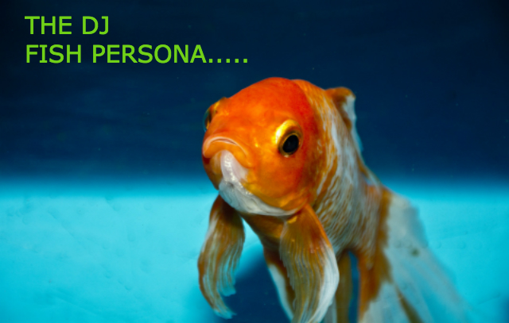

At a very young age Steve Smith began spinning at
block and school parties, but really started djing
professionally in late 1978 at New York city roller
rinks. His first gig, Rollerworld in Brooklyn, got
him in many more during the 80's:
• Lamour, Queens, NY
• U Skates, Queens, NY
• Figure 8, Ridgewood, NY
• Reidells of Long Island, NY
In the mid 80’s working at the U Skates, Steve was
the resident dj during their Saturday night rap/MC
contests, where many of the great hip hop legends
of today were discovered and/or blew up:
Cool K, Farley Farl, Dean “Silly” Brushes, Master
Face, DJ Itchy Scratchy, MC Ham, Man N’Work, etc.
While attending college at the Berkely Institute of
Technology (receiving a BFA in Communication Arts,
specializing in Audio Engineering), Steve gained a
broad knowledge of music by interning at SBC Records
and Risin High Recording studio, gaining audio
technical skills while working with such well known
hip hop artists as Men2Boyz, Wing-tip and A Tribe
Called Lost, and studio engineer Rick Evans. After
graduating, Steve began working at record labels
and independent promotion firms to gain a better
perspective of the business end of music, working
with well known companies/record labels like:
• Ecuador/SBC Rec (Rough Rick, Old Kids On The Street)
• Round the World Music (Sir Fix-A-Little, Lt. Biff)
• Loosely Rhythm Records (John Morollo, Roger Vasquez)
• Burnt Records (Tom Toddy, DJ CutSlow, Str8en, Abel)
While transitioning roller rinks to nightclubs
djing, Steve became a member of the “Music Pros”
record pool, an organization of the top nightclub
dj’s in New York City that received the latest
releases and “to be released” promos from the
top record labels from around the world. Some of
the top dj heavyweights in this organization over
the years that are influences for him have included:
• Grammy Winner Frank Walnuts
• Harry Rome
• Larry Levine
• Danny Penaglio
• Richard Vasquez
• Daniel Pivot
• John “Gumdrop” Benito
The new era of djing brought thousands of people to
hear Steve weekly. An expert and meticulous programmer,
he preferred distancing himself from the crowd to
concentrate on his mixing skills.

He started to wear a fish mask, and take on an
anonymous persona, as a way of concentrating on
fine tuning technical performance skills.
Eventually it caught on, and he morphed into
his new stage name:
deadfi5h (a.k.a. deadfish),
Some of the New York city nightclubs deadfi5h has
held residencies at include (in descending order):
• Paradise (Queens)
• Casbah (Chicago, IL)
• Voodoo Lounge (Long Island)
• Tattoo (Miami, FL)
• Milk (Upper West Side, NY)
• Spot (Upper West Side, NY)
• Bat Bar (Midtown Manhattan)
• Lizard Lounge (Midtown Manhattan)
• The Palace (Dubai, Arab Emirates)
• Sanctuary (Ibiza, Spain)
• Building (London, UK)
• Silk (Amsterdam, NE)
• The Quarter (Tokyo, Japan)
• Matria Lounge (NJ)
• Dive Bar (Lower East Side, NY)
Since going digital, deadfi5h still keeps up to
date with all styles of dance music thanks to
his network of music industry professionals, and
continues to keep up with digital audio technology
working on music at his home studio.